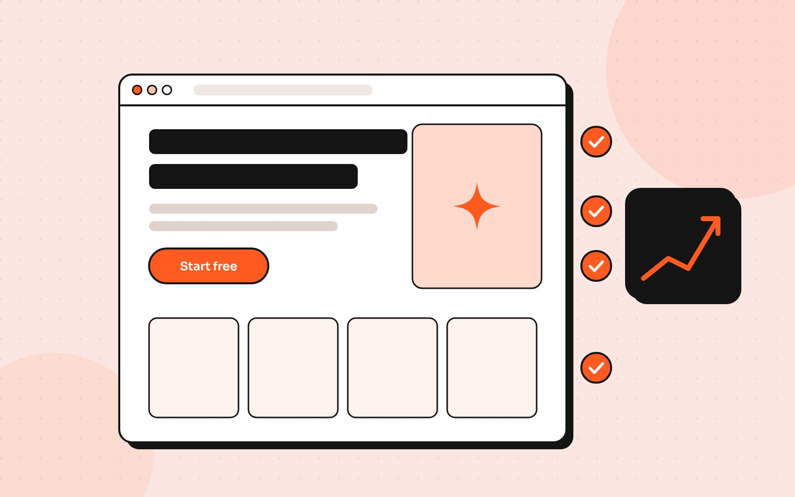
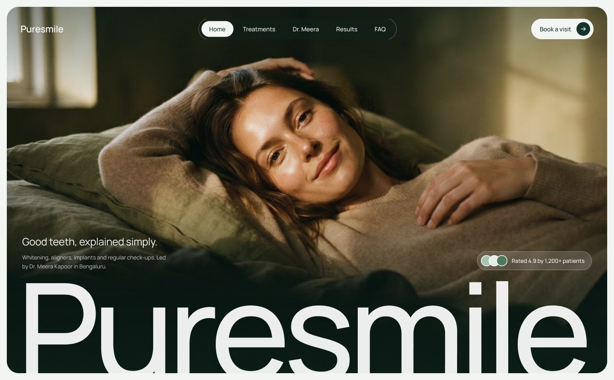

10 Landing Page UX Fixes That Lift Conversions Without a Redesign
Before you rebuild your landing page, try these ten fixes. Most take an afternoon and make a measurable difference.

A landing page has one job: get visitors to take one action. When conversions are low, the instinct is to redesign everything. In my experience, a handful of focused UX fixes usually does more, faster.
1. Rewrite the headline around the outcome
Visitors decide in seconds. Your headline should say what they get, not what you are. “Book a dentist you’ll actually like” beats “Welcome to our clinic”.
A good test is the “so what?” check. Read your headline aloud and ask “so what?” If the answer is the real benefit, that answer should probably be your headline.
2. Keep one main call to action
Every extra button competes for attention. Choose one primary action, repeat it down the page and make secondary options visually quieter.

3. Put proof next to the promise
Reviews, ratings, client logos and numbers work best right beside the claim they support, not hidden in a section at the bottom.
- A star rating and review count beside the main button
- A short testimonial that addresses the biggest doubt
- Logos of clients or press, kept small and greyscale
- Specific results where you have them, with context
4. Answer objections before they’re asked
Price, time, risk and “is this for me?” are the usual blockers. A short FAQ and clear guarantees near the CTA remove hesitation.
5. Make the form shorter
Every field you remove makes it easier to say yes. Ask for the minimum now; you can collect the rest later.
6. Design for the thumb
Most landing page traffic from ads is mobile. Use large tap targets, a sticky CTA and short sections that each make one point.
7. Show, don’t describe
Screenshots, short videos and before-and-after images explain a product faster than paragraphs. If it’s software, show the real interface.
For services, show the process: a simple three-step visual of what happens after someone clicks your button. People convert more easily when they can picture what comes next.
8. Speed it up
A slow page loses visitors before they read a word. Compress images, remove unused scripts and check your Core Web Vitals.
9. Match the ad to the page
If your ad promises a free trial, the page should open with the free trial. Message match makes visitors feel they’re in the right place.
10. Test one thing at a time
Change the headline, measure, then change the CTA. Testing everything at once tells you nothing about what worked.
Give each test enough time and traffic to be meaningful, and write down what you changed and why. That log becomes a playbook for your next landing page, so every launch starts from what already works.
A simple landing page structure that works
- Hero: outcome headline, one sentence of support, main button, proof
- Problem: show you understand the visitor’s situation
- Solution: how it works in three simple steps
- Proof: reviews, results and recognisable logos
- Objections: FAQ, guarantee and pricing clarity
- Final call to action that repeats the main promise
You don’t need to follow it exactly, but if your page is missing one of these sections, that gap is often where visitors drop off.
Want a second opinion?
Landing pages and CRO are a big part of my work, from healthcare to agencies and AI products. Send me your page and I’ll point out the fixes worth doing first.
Send me your screens and I’ll show you where users drop off and what to fix first.
Quick answers
How can I increase my landing page conversion rate?
Lead with an outcome-focused headline, keep one clear call to action, place proof near your claims, shorten forms and make the page fast and mobile-friendly.
Should I redesign my landing page or optimise it?
Optimise first. Targeted UX fixes are faster and easier to measure. Redesign when the page’s structure or brand no longer fits your offer.